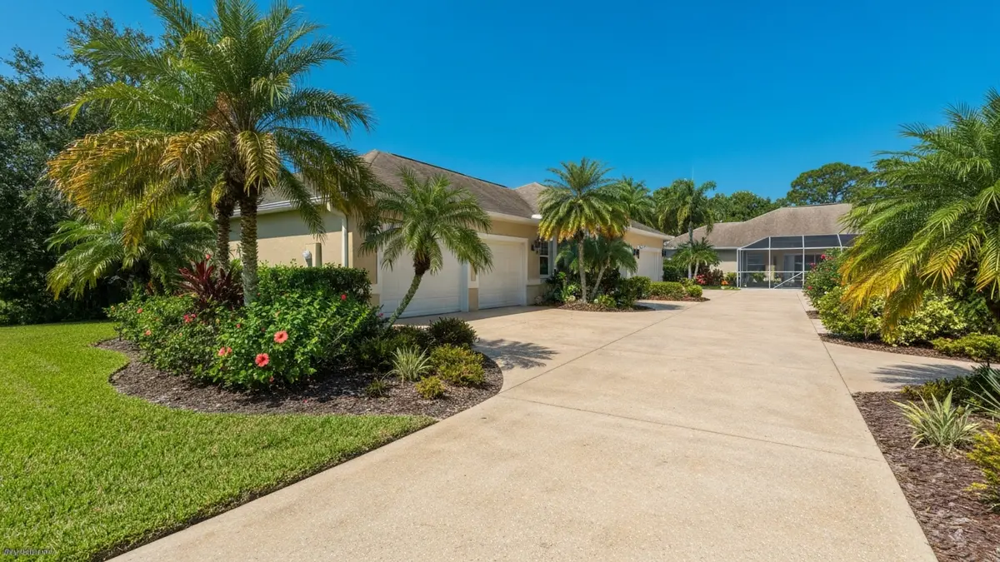

Lutz's unique character, straddling the Hillsborough-Pasco county line, presents distinct challenges and opportunities for homeowners requiring robust concrete surfaces. The area's blend of expansive rural properties and growing suburban developments often means larger driveways, more extensive patios for outdoor living, and numerous pool decks to withstand Florida's relentless sun and heavy rainfall. Whether your property boasts sprawling acreage or a meticulously landscaped suburban lot, durable concrete is essential to combat the humid climate, sandy soils, and the wear and tear of daily life. Our services ensure your Lutz property not only looks exceptional but also endures the specific environmental demands of this vibrant border community, from scorching summers to sudden downpours.
Tampa Concrete Pros stands out for Lutz residents due to our unparalleled local expertise. Being deeply familiar with the region, including the unique soil compositions and water table levels common to the Hillsborough-Pasco border, allows us to deliver superior, long-lasting results. We're not just a Tampa company; we're part of the extended community, understanding the specific needs from sprawling estates off Lake Fern Road to suburban homes near US-41. Our proximity means quicker response times and a keen insight into Lutz's aesthetic and functional preferences.
Choosing us means benefiting from concrete solutions specifically engineered for Lutz’s climate and lifestyle. We account for everything from the intense summer heat that can cause cracking to the heavy seasonal rains demanding proper drainage slopes, critical for properties with large concrete footprints. Our commitment to using high-grade materials and proven techniques ensures your investment in a new driveway, patio, or pool deck offers maximum durability and enhances your home’s value, whether it's a quiet retreat or a bustling family hub.
Tampa Concrete Pros proudly extends its expert concrete services across all of Lutz, a distinctive community nestled along the Hillsborough-Pasco border. We regularly serve properties from the expansive rural tracts off Lake Fern Road and County Line Road to the more developed suburban neighborhoods like Cheval, Heritage Harbor, and Willow Bend. Our teams are familiar with the main arteries such as US-41, Dale Mabry Highway, and SR-54, navigating the area efficiently to reach your home or business. Whether you’re near the charming Lake Stemper or closer to the bustling intersections, we're dedicated to bringing top-tier concrete solutions directly to your doorstep in Lutz and its vibrant surroundings.
The cost of concrete services in Lutz varies based on project size, complexity, and chosen finishes. For a typical suburban home driveway, patio, or pool deck in areas like Heritage Harbor, you might expect a range from $4,000 for a standard patio to $15,000+ for a large decorative driveway, depending on square footage and materials. We provide transparent, no-obligation quotes tailored to your specific Lutz property.
For a typical Lutz home, a standard concrete driveway or patio installation usually takes 3-7 days, including preparation, pouring, and curing. Larger or more intricate projects, especially those involving decorative elements on spacious properties common off Lake Allen, might extend to 1-2 weeks. We always aim for efficiency while ensuring quality and proper curing time.
Yes, we proudly serve all areas within Lutz! This includes established communities like Cheval and Heritage Harbor, growing developments along County Line Road, and the more rural properties stretching towards Odessa and Land O' Lakes. Whether you're near US-41, Dale Mabry, or in the quieter corners of Lutz, our team is equipped and ready to provide expert concrete services.
Effective drainage is paramount in Lutz, given Florida’s heavy rainfall and often flat topography. Our approach includes meticulous site grading, establishing appropriate slopes away from structures, and installing integrated drainage systems like French drains if necessary. We assess your specific property's water flow and soil composition to design concrete surfaces that effectively manage stormwater runoff, preventing pooling and protecting your home's foundation from the humid conditions prevalent here.
Ready to schedule your concrete driveways, patios, and pool decks service in Lutz? Call us today or use the contact form above — we serve Lutz and all surrounding areas of Tampa, FL. Most Lutz jobs are scheduled within 48-72 hours.
We're your local concrete experts serving Lutz and all surrounding areas.
📞 Call (813) 705-9021